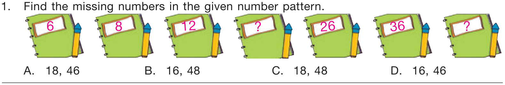
Find the missing numbers in the given number pattern.
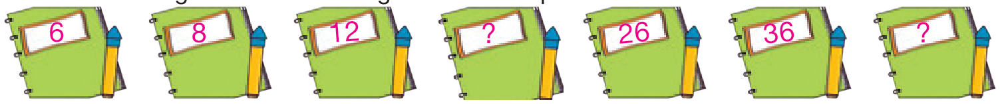
18, 46
16, 48
18, 48
16, 46
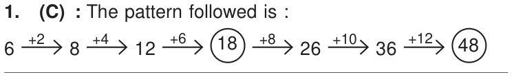
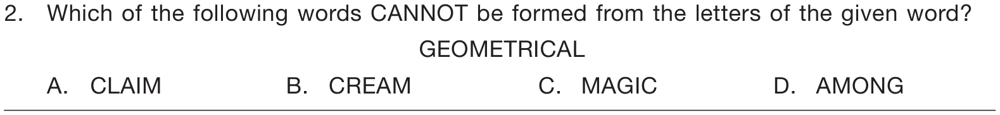
Which of the following words CANNOT be formed from the letters of the given word?
GEOMETRICAL
CLAIM
CREAM
MAGIC
AMONG
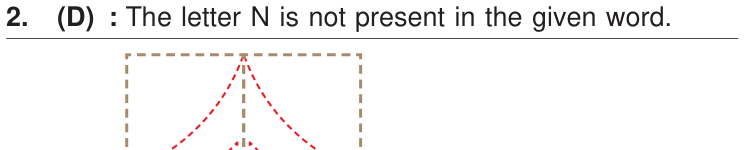
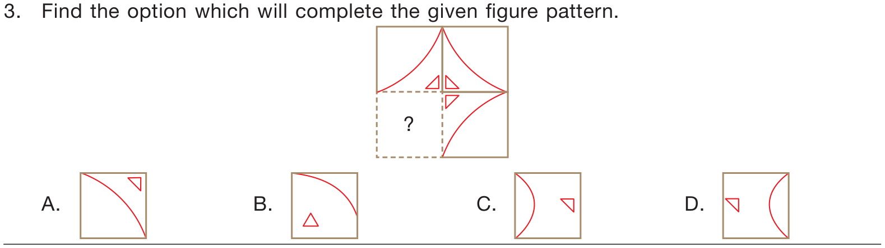
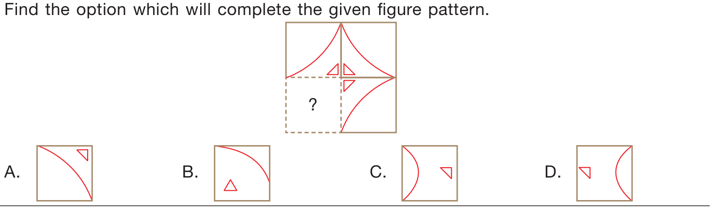
Option A
Option B
Option C
Option D
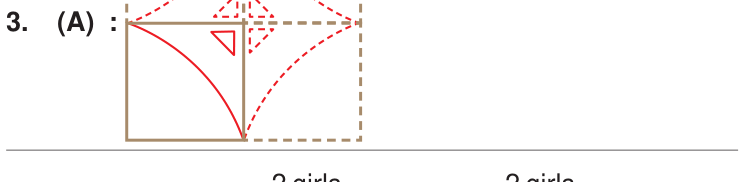
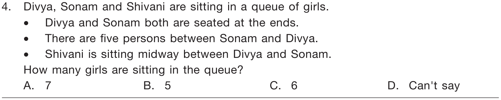
Divya, Sonam and Shivani are sitting in a queue of girls.
• Divya and Sonam both are seated at the ends.
• There are five persons between Sonam and Divya.
• Shivani is sitting midway between Divya and Sonam. How many girls are sitting in the queue?
7
5
6
Can't say
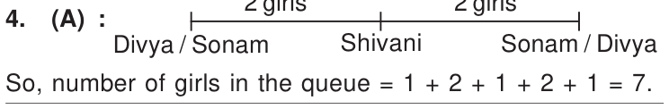
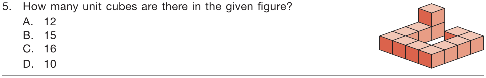
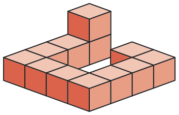
12
15
16
10
Number of unit cubes = 12
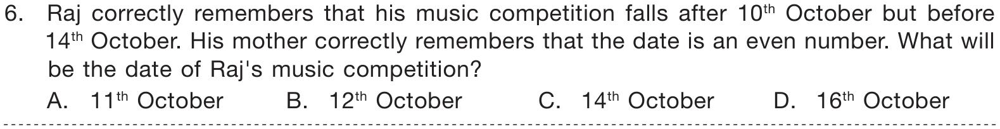
Raj correctly remembers that his music competition falls after 10th October but before 14th October. His mother correctly remembers that the date is an even number. What will be the date of Raj's music competition?
11th October
12th October
14th October
16th October
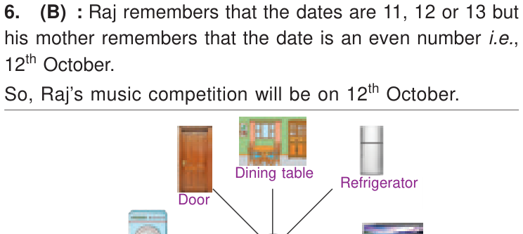
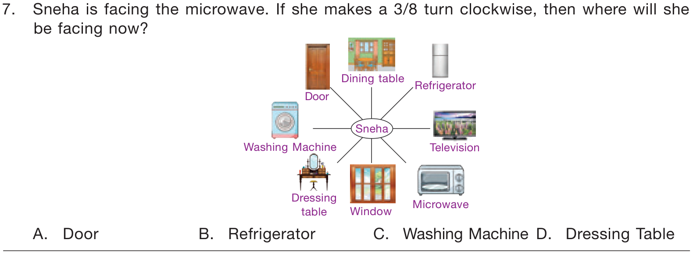
Sneha is facing the microwave. If she makes a 3/8 turn clockwise, then where will she be facing now?
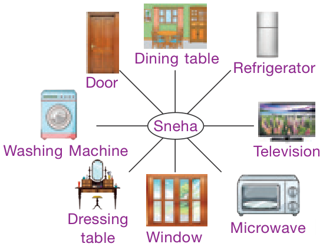
Door
Refrigerator
Washing Machine
Dressing Table
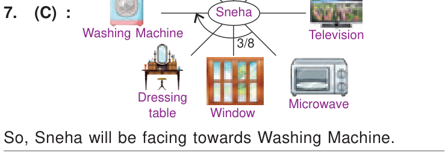
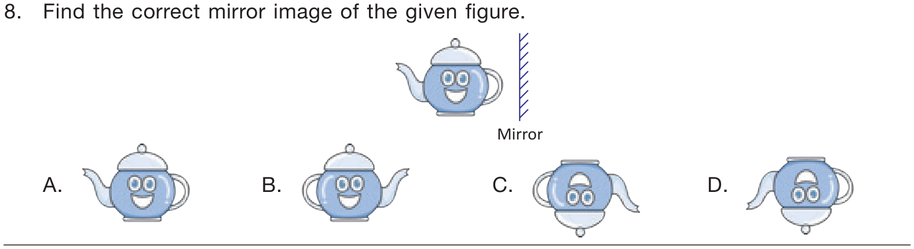
Find the correct mirror image of the given figure.
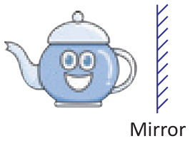
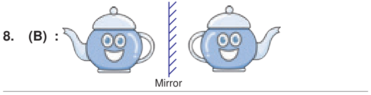
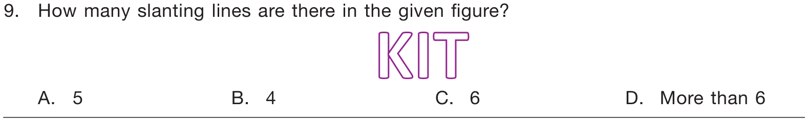
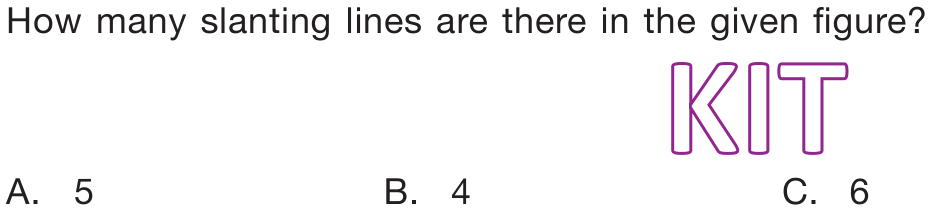
5
4
6
More than 6
Number of slanting lines in the given figure = 4
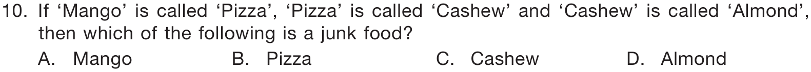
If ‘Mango’ is called ‘Pizza’, ‘Pizza’ is called ‘Cashew’ and ‘Cashew’ is called ‘Almond’, then which of the following is a junk food?
Mango
Pizza
Cashew
Almond
Pizza is a junk food but Pizza is called Cashew.
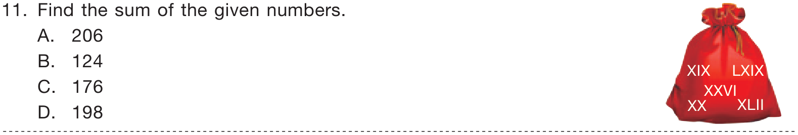
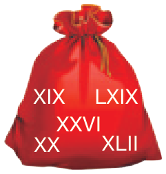
206
124
176
198
XIX = 19; LXIX = 69; XXVI = 26; XX = 20 and XLII = 42
So, sum of numbers = 19 + 69 + 26 + 20 + 42
= 176
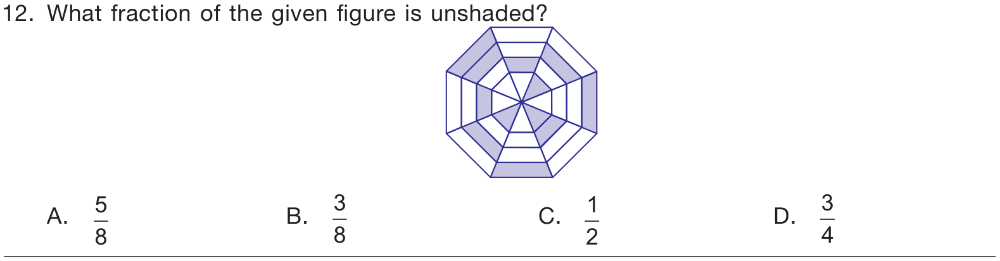
What fraction of the given figure is unshaded?
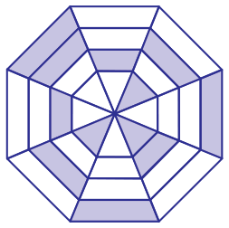
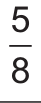
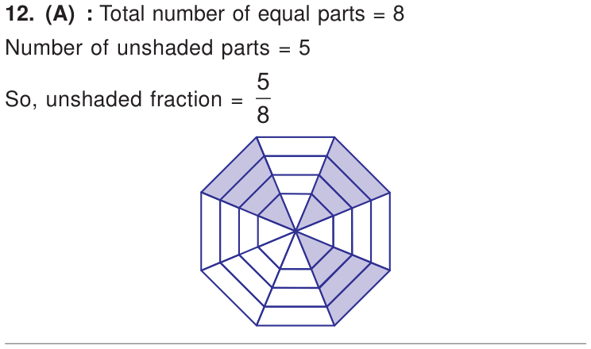
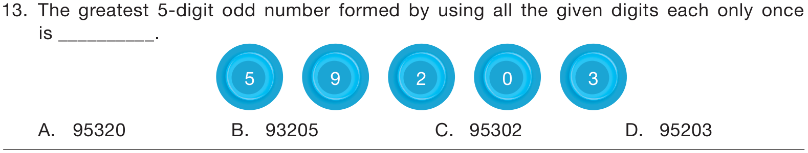
The greatest 5-digit odd number formed by using all the given digits each only once is __________.
95320
93205
95302
95203
Greatest 5-digit odd number formed = 95203
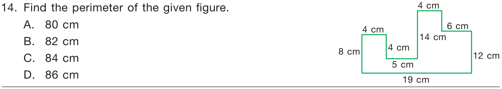
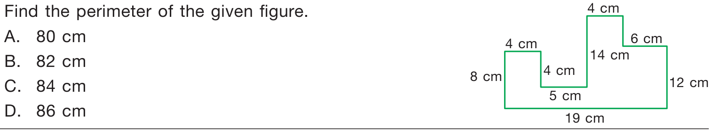
Option A
Option B
Option C
Option D
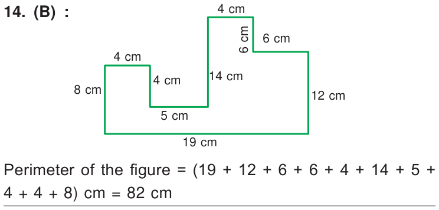
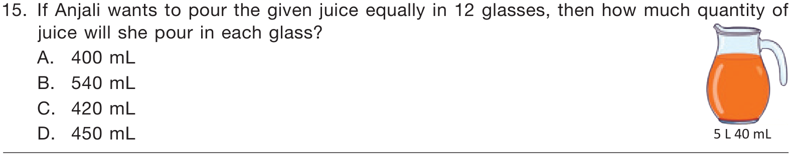
If Anjali wants to pour the given juice equally in 12 glasses, then how much quantity of juice will she pour in each glass?
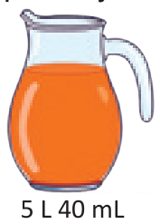
540 mL
420 mL
450 mL
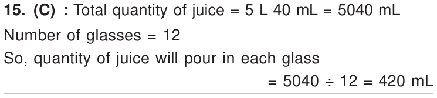
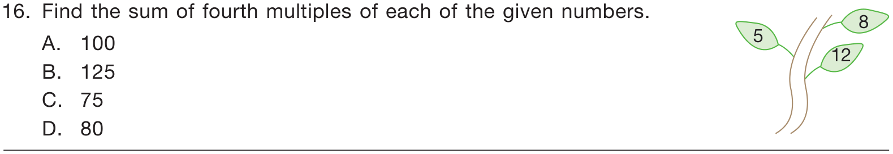
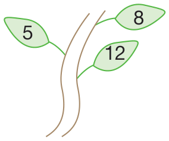
100
125
75
80
4th multiple of 5 = 5 × 4 = 20 4th multiple of 8 = 8 × 4 = 32
4th multiple of 12 = 12 × 4 = 48
So, required sum = 20 + 32 + 48 = 100
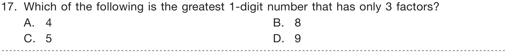
Which of the following is the greatest 1-digit number that has only 3 factors?
4
8
5
9
Factors of 4 = 1, 2 and 4
Factors of 8 = 1, 2, 4 and 8
Factors of 5 = 1 and 5
Factors of 9 = 1, 3 and 9
So, 9 is the greatest 1-digit number that has only 3 factors.
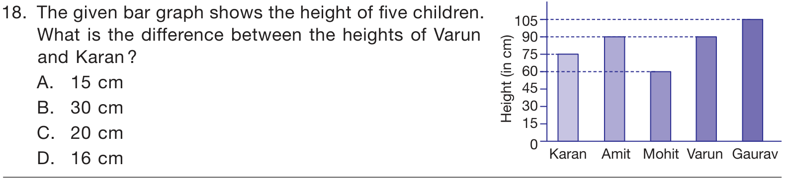
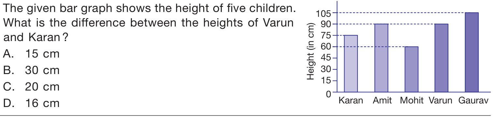
Option A
Option B
Option C
Option D
Height of Varun = 90 cm
Height of Karan = 75 cm
\ Required difference = 90 cm – 75 cm = 15 cm
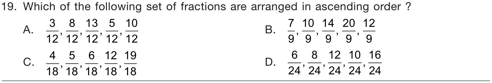
Which of the following set of fractions are arranged in ascending order ?
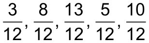
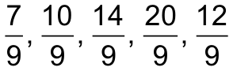
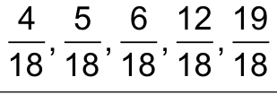
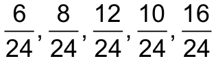
The set of fractions given in option C are arranged in ascending order.
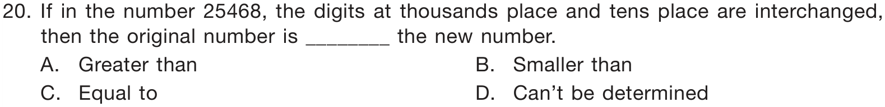
If in the number 25468, the digits at thousands place and tens place are interchanged, then the original number is ________ the new number.
Greater than
Smaller than
Equal to
Can’t be determined
After interchanging the digits, the number becomes 26458.
As, 25468 < 26458
So, original number is smaller than the new number.
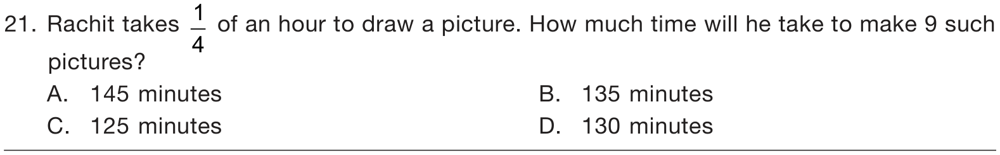
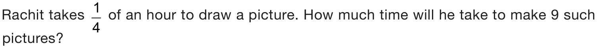
145 minutes
135 minutes
125 minutes
130 minutes
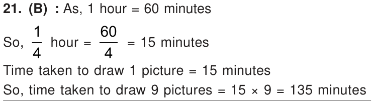
Niharika goes on shopping with her friends. She bought clothes worth ₹ 6420, jewellery worth ₹ 67940 and footwears worth ₹ 2870. How much money did she spend in all?
₹ 77230
₹ 78350
₹ 67310
₹ 65410
Total amount spend by Niharika = ₹ (6420 + 67940 + 2870) = ₹ 77230
A city has a population of 92582. Round off the population to the nearest hundreds.
92500
92600
93500
92580
Population of the city = 92582
Round off 92582 to the nearest hundreds gives 92600.
8 packets of juice of 250 mL each are poured into a jug. How much juice is left in the jug, if 800 mL of juice has been consumed?
2 L 200 mL
1 L 20 mL
1 L 2 mL
1 L 200 mL
Sejal has a field in the shape of a rectangle. The length of the field is thrice the breadth. The breadth is 40 m. How much wire is used to fence the field?
420 m
280 m
380 m
320 m
Breadth of the rectangle = 40 m
So, length of the rectangle = 3 × Breadth = 3 × 40 = 120 m \ Length of wire used for fencing
= Perimeter of the rectangular field
= 2(120 + 40)
= 2 × 160 = 320 m
Meeku kept birds in cages with 8 birds in each cage. If she has 14048 birds. How many cages does she need?
1500
1250
1356
Total number of birds = 14048
Number of birds in 1 cage = 8
\ Number of cages needed = 14048 ÷ 8 = 1756
A company donated ₹ 20875 in 2019, ₹ 45820 in 2020 and ₹ 46850 in 2021. In which year the company donated the least amount?
2019
2020
2021
Can't be determined
As, ₹ 46850 > ₹ 45820 > ₹ 20875
So, in 2019, the company donated the least amount.
2:00 p.m.
2:30 p.m.
2:45 p.m.
3:00 p.m.
Sonika left her house at 1 : 15 p.m.
Time at which Sonika needs to be her home = 1 hr 45 mins after 1 : 15 p.m. = 3 : 00 p.m.
Javed had 21 comics. He got two more from his aunt, 12 more on his birthday and bought 3 more with his pocket money. How many comics does he have now?
38
40
36
28
Number of comics Javed had = 21 Number of comics he got from his aunt = 2 Number of comics he got on his birthday = 12 Numbers of comics he bought = 3
So, total number of comics Javed has now = 21 + 2 + 12 + 3 = 38
Parking space in theatre P is for 79,407 cars, while the same in theatre Q is for 58,868 cars. How many more cars can be parked in theatre P than in theatre Q?
38,275
21,549
21,461
20,539
Select the INCORRECT option.
A prime number has only two factors.
2 is the only even prime number.
Sum of 6th multiple of 8 and 9th multiple of 7 is 111.
The difference of two prime numbers is always even.
Option A
Option B
Option C
Option D
Option A
Option B
Option C
Option D
Perimeter of figure I
= 7 cm + 10 cm + 7 cm + 10 cm = 34 cm
Perimeter of figure II = 5 cm + 10 cm + 9 cm = 24 cm Perimeter of figure III = 7 cm + 7 cm + 3 cm + 5 cm = 22 cm As, 22 cm < 24 cm < 34 cm
So, correct ascending order is : III, II, I
Mr Verma and his family are planning to go to their hometown. He has ₹ 15000 with him on his way. Using the clues given below, find the amount left with him when he reaches his hometown.
Clues:
(a) He fills up petrol of ₹ 2500 in his car.
(b) He and his family had a lunch of ₹ 4238 at a restaurant.
(c) Then his children took a camel ride for which he paid ₹ 158.
(d) He took sweets of ₹ 1426 from a sweet shop.
(e) He gave ₹ 100 each to five children after he reached his hometown.
₹ 6578
₹ 6470
₹ 8422
₹ 6178
Amount that Mr Verma has = ₹ 15000
Total amount he spend
= ₹ 2500 + ₹ 4238 + ₹ 158 + ₹ 1426 + 5 × ₹ 100 = ₹ 2500 + ₹ 4238 + ₹ 158 + ₹ 1426 + ₹ 500 = ₹ 8822 So, amount left with him = ₹ 15000 – ₹ 8822 = ₹ 6178
< = >
> < =
< > <
> > >